How much of your bankroll should you bet when you have an edge?
Bet too little and you leave growth on the table. Bet too much and a losing streak wipes you out.
The Kelly criterion gives the mathematically optimal answer — the fraction that maximizes long-run wealth growth.
This project implements the Kelly formula, simulates wealth trajectories across different bet-sizing strategies,
and visualizes why overbetting is just as dangerous as underbetting.
View source on GitHub →
Three plots in one figure: (1) optimal fraction vs win probability for different odds, (2) optimal fraction vs odds for different probabilities, (3) wealth evolution comparing no bet, ¼ Kelly, ½ Kelly, full Kelly, and 1.5× Kelly over 500 bets.
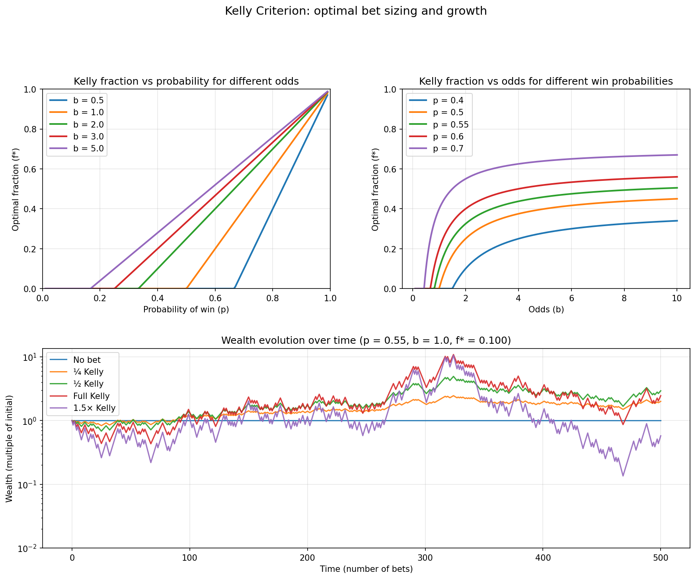
Each image below is an independent 50,000-bet simulation with a fresh random seed. Curves range from 0.1× to 4× Kelly plus all-in. Notice how 0.8× Kelly consistently dominates — and anything above 2× Kelly gets crushed by variance. Click any image to enlarge.
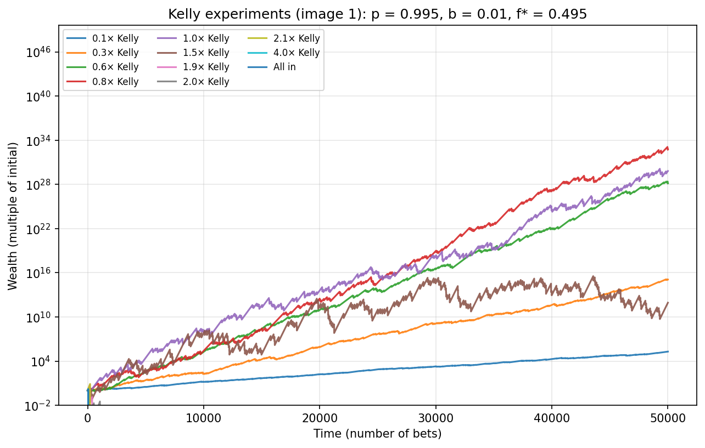
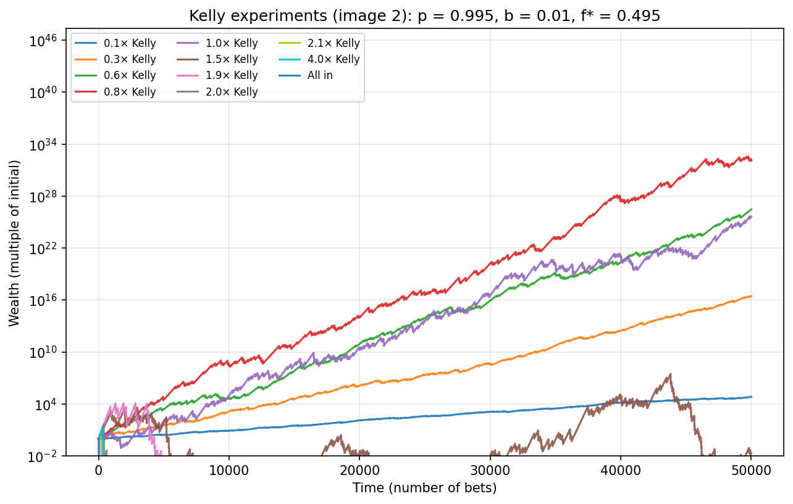
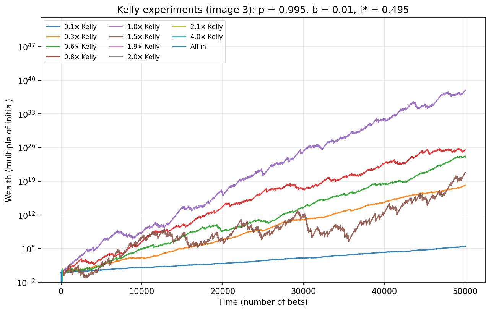
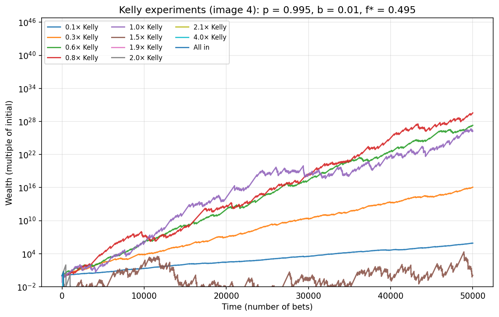
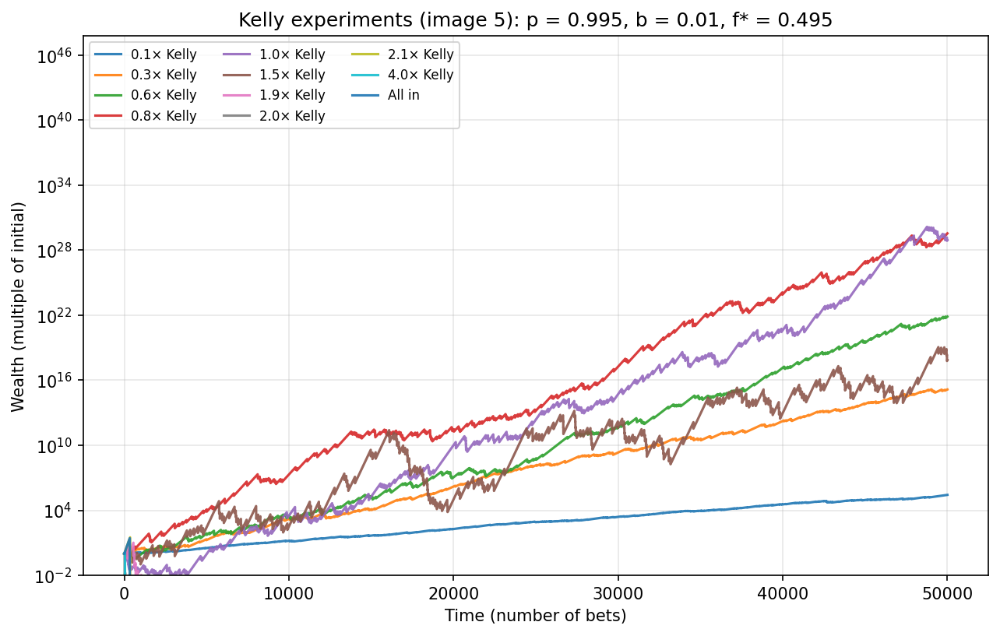
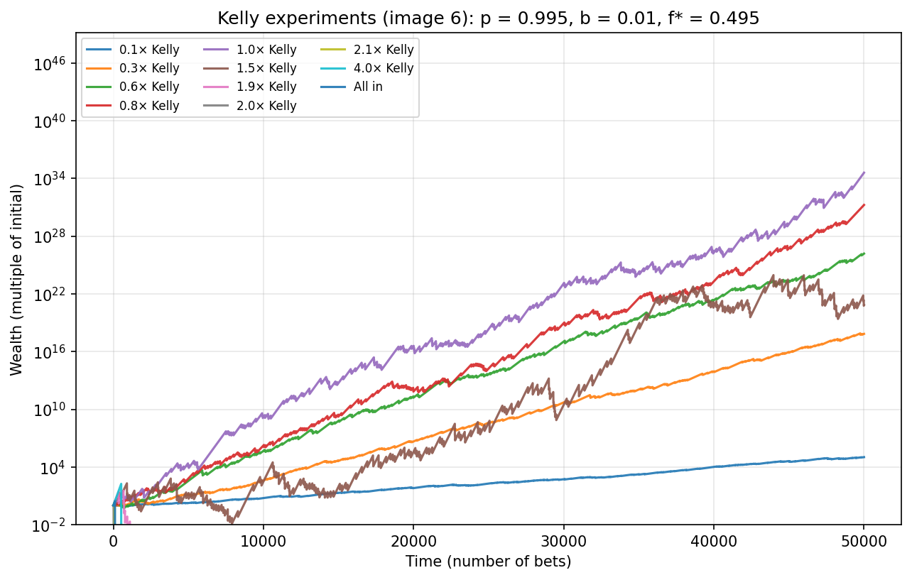
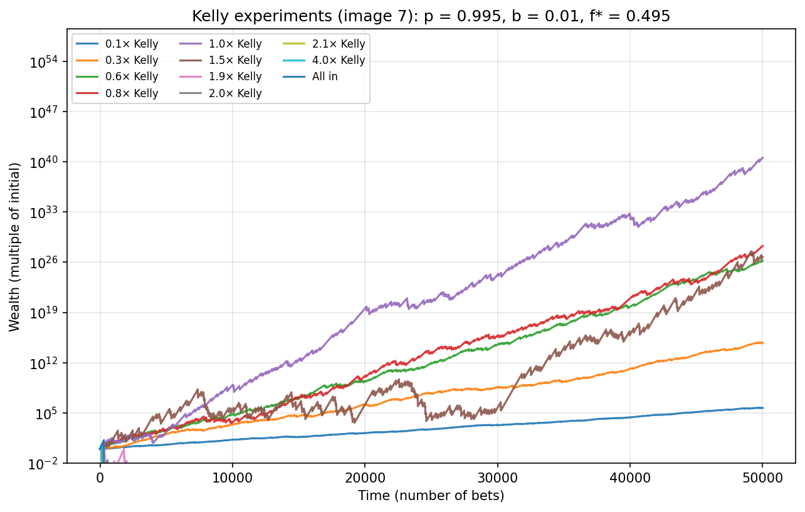
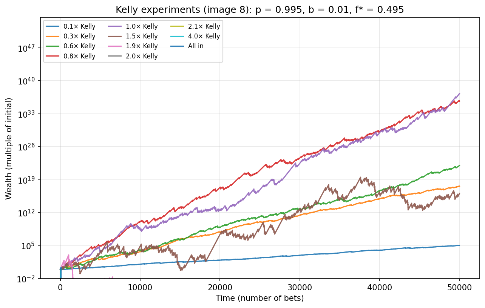
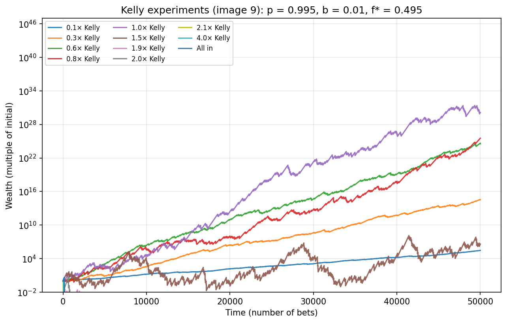
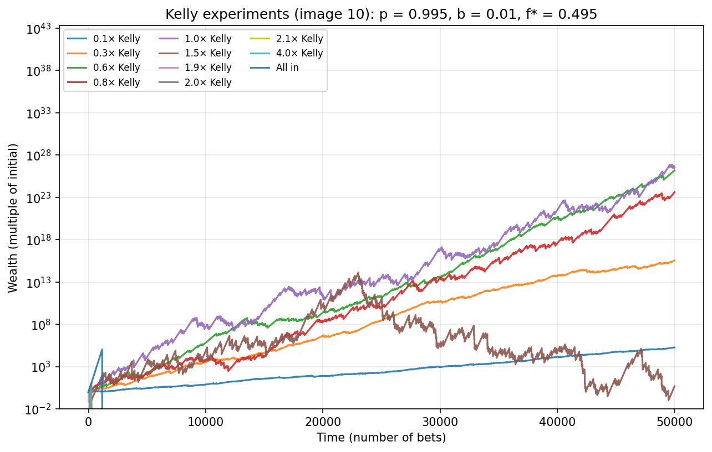
10 independent runs · p = 0.995, b = 0.01, f* = 0.495 · log scale